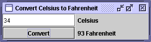

Feedback Form
|
|
Start of Tutorial > Start of Trail > Start of Lesson |
Search
Feedback Form |
CelsiusConverter
Our next example,CelsiusConverteris actually useful: It is a simple conversion tool. The user enters a temperature in degrees Celsius and clicks the
Convert...button, and a label displays the equivalent in degrees Fahrenheit. Let's examine the code to see howCelsiusConverterparses the number entered in theJTextField. First, here's the code that sets up theJTextField:The integer argument passed in theJTextField tempCelsius = null; ... tempCelsius = new JTextField(5);JTextFieldconstructor--5in the example--indicates the number of columns in the field. This number is used along with metrics provided by the current font to calculate the field's preferred width, which is used by layout managers. This number does not limit how many character the user can enter.We want to perform the conversion when the user clicks the button or presses Enter in the text field. To do so, we add an action event listener to the
convertTempbutton andtempCelsiustext field.The event-handling code goes into theconvertTemp.addActionListener(this); tempCelsius.addActionListener(this); ... public void actionPerformed(ActionEvent event) { //Parse degrees Celsius as a double and convert to Fahrenheit. int tempFahr = (int)((Double.parseDouble(tempCelsius.getText())) * 1.8 + 32); fahrenheitLabel.setText(tempFahr + " Fahrenheit"); }actionPerformedmethod. It calls thegetTextmethod on the text field,tempCelsius, to retrieve the data within it. Next it uses theparseDoublemethod to parse the text as a double-precision floating-point number before converting the temperature and casting the result to an integer. Finally, it calls thesetTextmethod on thefahrenheitLabelto make the label display the converted temperature.
|
|
Start of Tutorial > Start of Trail > Start of Lesson |
Search
Feedback Form |
Copyright 1995-2004 Sun Microsystems, Inc. All rights reserved.